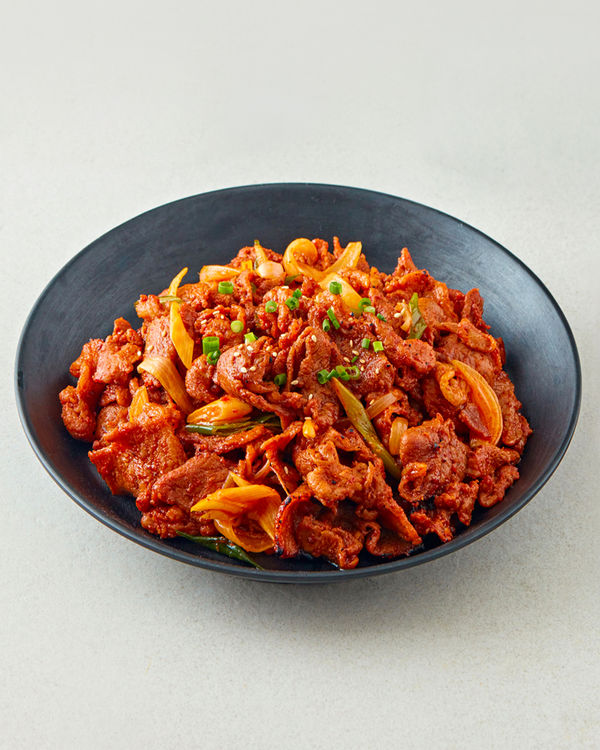

메뉴명: 제육볶음

메뉴 설명
: 돼지고기를 고추장 양념에 볶아낸 매콤달콤한 요리입니다.
칼로리: 약 500~550kcal (1인분 기준)
나트륨: 약 1,500~1,800mg
재료
돼지고기 200g, 양파 1개, 고추장 2큰술, 간장 1큰술, 설탕 1큰술, 다진 마늘 1작은술
레시피
1. 돼지고기를 고추장 양념에 재웁니다.
2. 팬에 돼지고기와 양파를 넣고 볶습니다.
3. 재료가 익으면 불을 끄고 완성합니다.